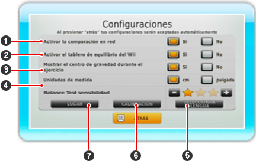

Aquí puede activar las configuraciones apuntando con el mando de Wii al campo y confirmando con . Una configuración esta activada cuando el campo está en naranja.

1
Activar las funciones de comparación en red si tu consola de Wii tiene ya activado el Conexión Wi-Fi de Nintendo.
2
Active aquí su tu Wii Balance Board.
3
Decida si usted desea ver su centro de gravedad durante el ejercicio.
4
Seleccione las unidades de medición correctas para su uso.
5
Aquí usted puede cambiar la lengua del software.
6
Usando "calibrar" usted puede calibrar cuando quiera su Wii Balance Board.
7
En "sitio" usted tiene hasta tres líneas de texto libre para por ej. introducir su nombre o su localización. El texto se muestra en el menú principal.

 . Una configuración esta activada cuando el campo está en naranja.
. Una configuración esta activada cuando el campo está en naranja.